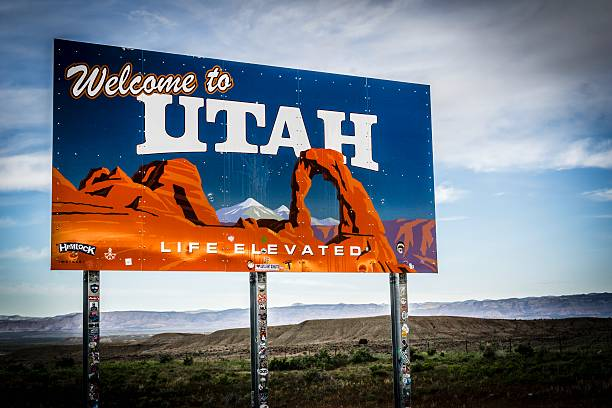

About Me

My name is Mark McDonald. Friends and family have given me several nickanmes over the years such as McDee, McDaddy, Marko, etc...the list goes on. I was born in Fort Polk, Louisiana and spent a majority of my childhood in Longview, Texas. I am currently working as a Senior Benefits Advisor for Paychex over the western region of the United States. I am married with no children. I love spending time with my wfie and traveling with her.
Utah
Utah is a landlocked state in the Mountain West subregion of the Western United States. It is one of the Four Corners states, sharing a border with Arizona, Colorado, and New Mexico. It also borders Wyoming to the northeast, Idaho to the north, and Nevada to the west. In comparison to all the U.S. states and territories, Utah, with a population of just over three million, is the 13th largest by area, the 30th most populous, and the 11th least densely populated. Urban development is mostly concentrated in two regions: the Wasatch Front in the north-central part of the state, which includes the state capital, Salt Lake City, and is home to roughly two-thirds of the population; and Washington County in the southwest, which has approximately 180,000 residents. Most of the western half of Utah lies in the Great Basin..